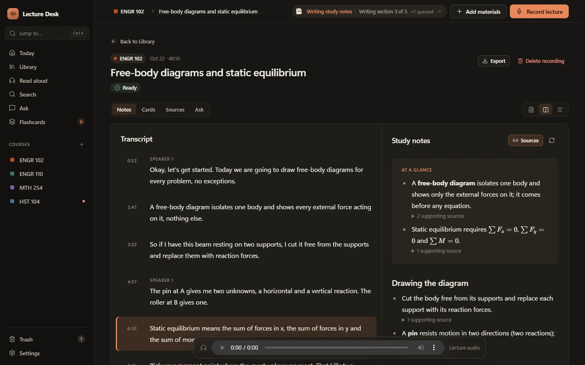
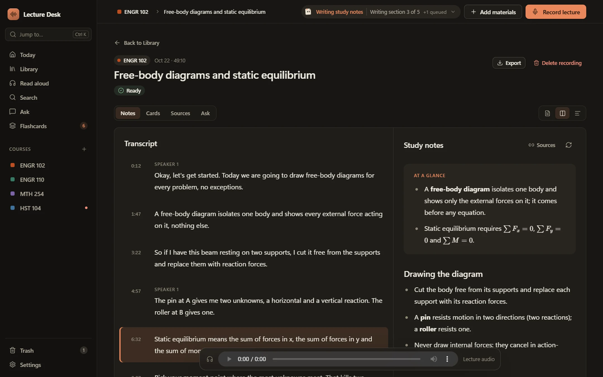

Notes you can trust
Every point shows where it came from.
Tap a source to jump to that moment in the recording or that page of the reading. When the AI isn't sure, you can check it in seconds.

Free for students · Windows
Lecture Desk records class, turns it into study notes that point back to the moment they came from, answers your questions, makes flashcards and reads your readings aloud. The AI runs on your computer, so your classes stay yours.
Windows 10 and 11 (64-bit) · 16 GB memory · Mac version in development

Everything for class
Record your microphone, the computer's audio, or both. A live transcript follows along while you take notes.
Notes you can trust
Tap a source to jump to that moment in the recording or that page of the reading. When the AI isn't sure, you can check it in seconds.

No account, no ads, no analytics. Recordings, transcripts and notes stay in a library on your laptop.
After a one-time setup, transcription, notes, search and read-aloud all run offline, even in a lecture hall with bad Wi-Fi.
Import your schedule from a screenshot or PDF. Each class keeps its own lectures, slides and readings, and Today shows what's next.
Laptops with an NVIDIA graphics card can add optional acceleration for much faster notes and transcription.
Prefer a bigger model? Bring your own key from Anthropic, OpenAI, Google and others. It's off until you turn it on.
Save a lecture's notes, practice questions and timed transcript as a PDF or web page to print, study from or share.
Your data
Getting started
Get Lecture Desk free from the Microsoft Store, or download the installer below.
Lecture Desk checks your laptop and downloads its study tools, about 12 GB, one time.
Add your classes, record a lecture, and open your study notes when it's done.
Download
Signed by Microsoft and updated automatically.
Get it freeThe direct installer isn't code-signed yet, so Windows SmartScreen may warn you. Choose More info, then Run anyway. To skip the warning, use the Microsoft Store version, which Microsoft signs. You can compare the file's SHA-256 below with yours by running certutil -hashfile on it.
A version for Apple silicon Macs is in development.
In developmentQuestions
Yes. There's no subscription, no account and no ads. The only optional costs are cloud AI features, which use your own API key and are billed by that provider if you turn them on.
No. Recordings, transcripts, notes and readings stay in a library on your laptop and are processed by AI running on it. If you choose to turn on cloud transcription or cloud notes with your own key, the app asks first and only sends what that feature needs.
That depends on your school and your instructor. Check your class's recording rules and get any permission you need before recording.
It depends on your laptop and the length of the lecture. Lecture Desk shows an estimate before it starts, keeps working in the background, and is much faster with an NVIDIA graphics card.
The Microsoft Store version is signed by Microsoft and updates itself, so it's the easiest choice. The direct installer is the same app for laptops where the Store isn't available. It doesn't update itself, so download new versions from this page.
It's in development for Apple silicon Macs. This page will have the download when it's ready.